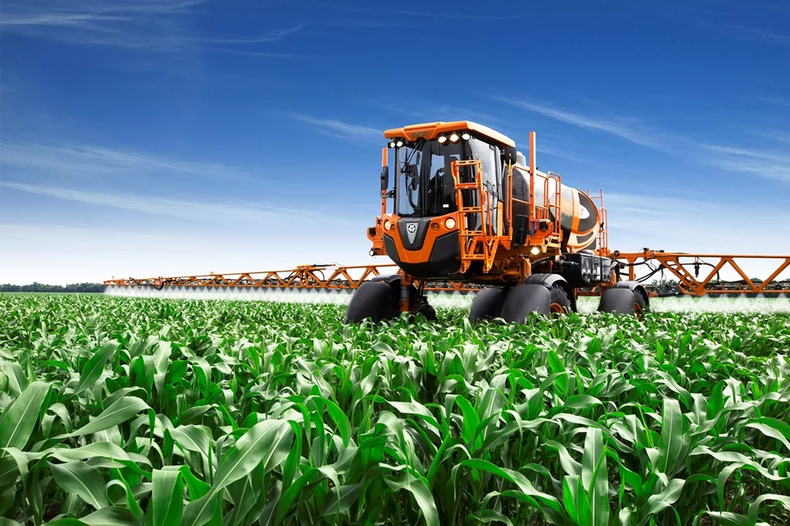

O QUE É A AGRICULTURA 4.0?
A Agricultura 4.0 é a revolução tecnológica no campo. Ela integra inovações como automação, inteligência artificial, Internet das Coisas (IoT), drones, big data e sensores de precisão para otimizar a produção agrícola, melhorar a sustentabilidade e reduzir desperdícios. Com o uso dessas tecnologias, a agricultura está mais inteligente e mais eficiente, proporcionando ganhos significativos tanto para os produtores quanto para o meio ambiente.
Tecnologias em Destaque
Galeria da Inovação
na imagem mostra uma planta com símbolos tecnológicos, uma pessoa segurando ela
a imagem representa um trator com um celular, com a camêra aberta mostrando um campo ou sítio

os tratores vão receber grandes tecnolgias no futuro
A integração dessas ferramentas também proporciona maior rastreabilidade dos produtos, garantindo transparência no processo produtivo e maior segurança para os consumidores. A Agricultura 4.0 não só transforma a maneira como os alimentos são cultivados, mas também abre portas para uma agricultura mais inteligente e conectada, adaptada às necessidades e desafios do futuro.
